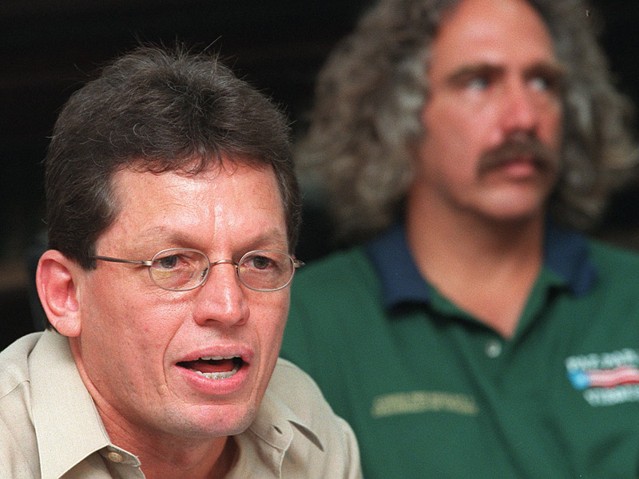
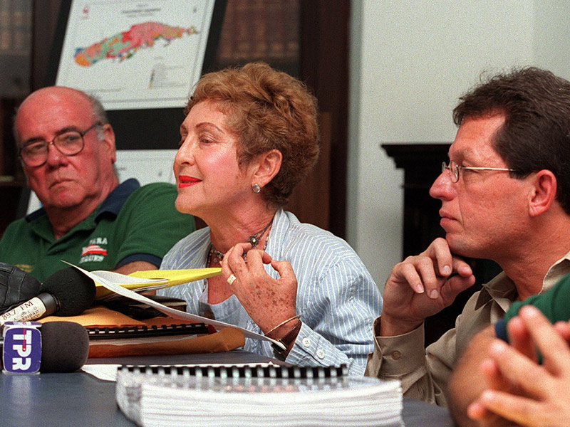
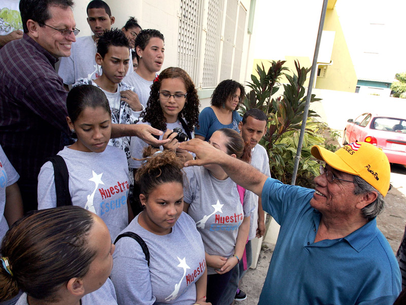

El planificador José 'Tato' Rivera Santana, en la foto junto al líder viequense Roberto Rabin, estuvo muy activo en la lucha por sacar a la Marina de Guerra de la Isla Nena desde que la lucha se recrudeció con la muerte de David Sanes. (Archivo / El Nuevo Día)
Rivera Santana (derecha) formó parte de un comité de apoyo técnico y profesional para promover el desarrollo sustentable de Vieques junto con profesionales como el doctor Rafael Rivera y la doctora Ileana Cotto. (Archivo / El Nuevo Día)
Rivera Santana ha mantenido vínculos con las causas viequenses. Aquí, saluda al actor Eduardo James Olmos durante la filmación de una película en Vieques en 2009. Ambos estuvieron presos por desobediencia civil en 2001.(Archivo / Primera Hora)
Rivera Santana compartió sus impresiones sobre la lucha viequense a 10 años de la salida oficial de la Marina de Guerra. (Jorge Ramírez / GFR Media)